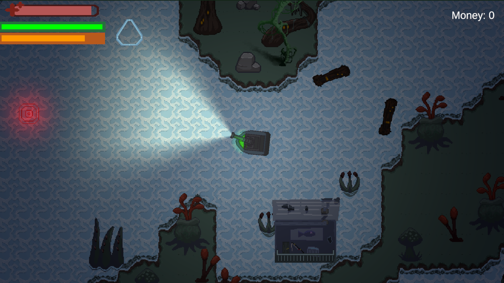
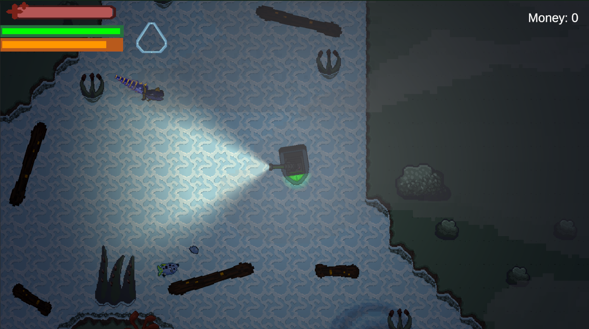
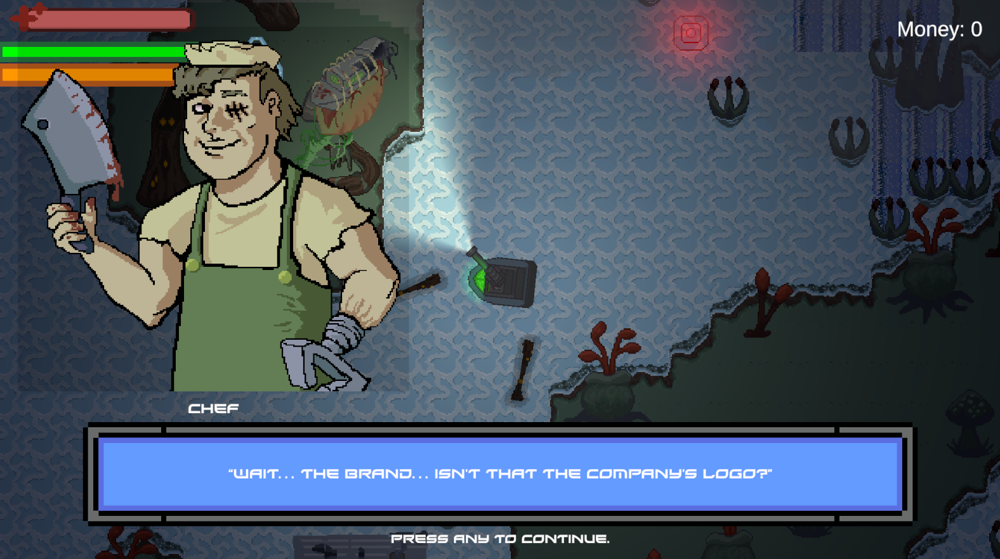
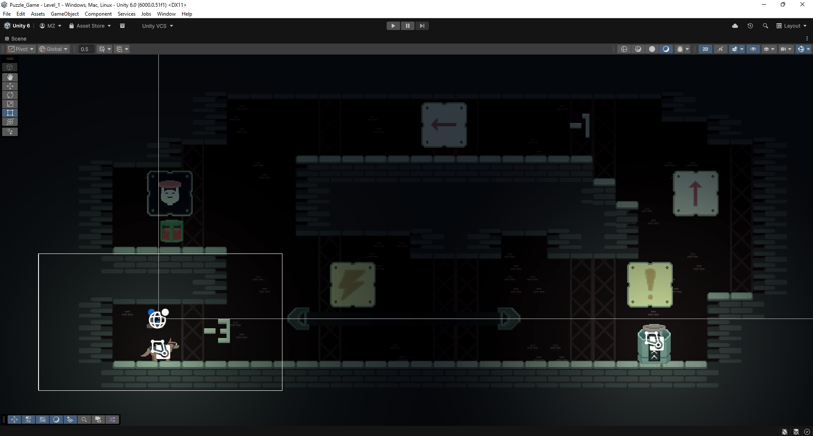
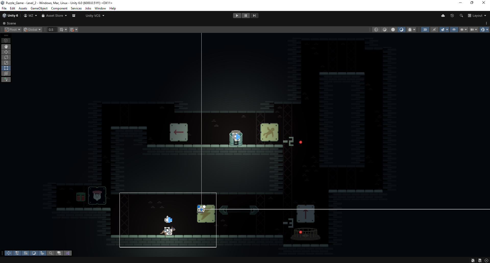
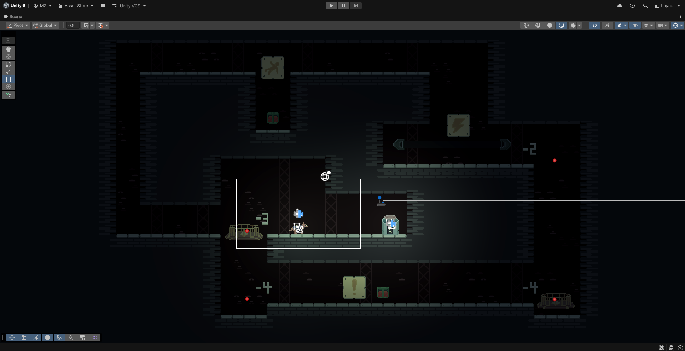
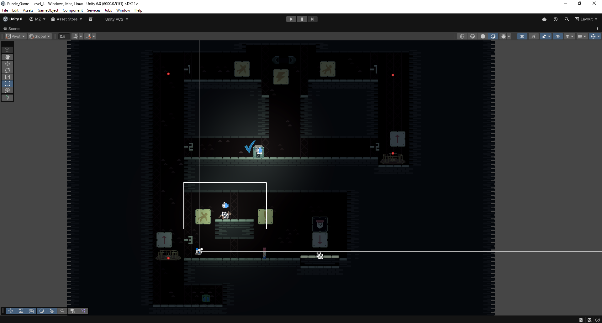
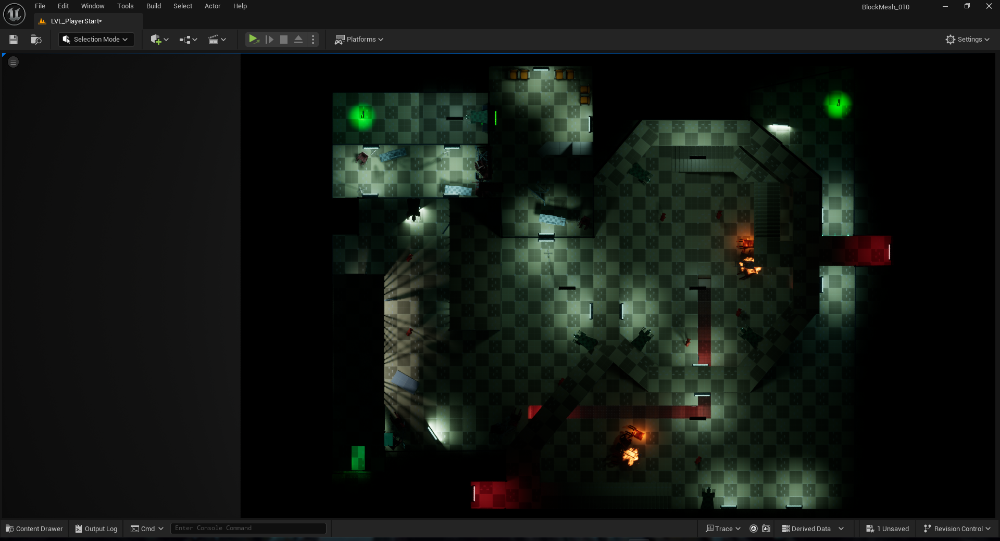
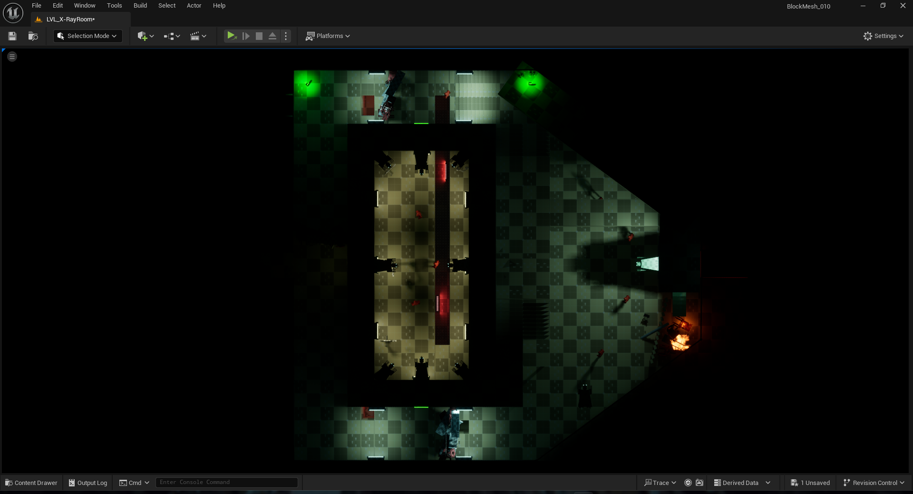
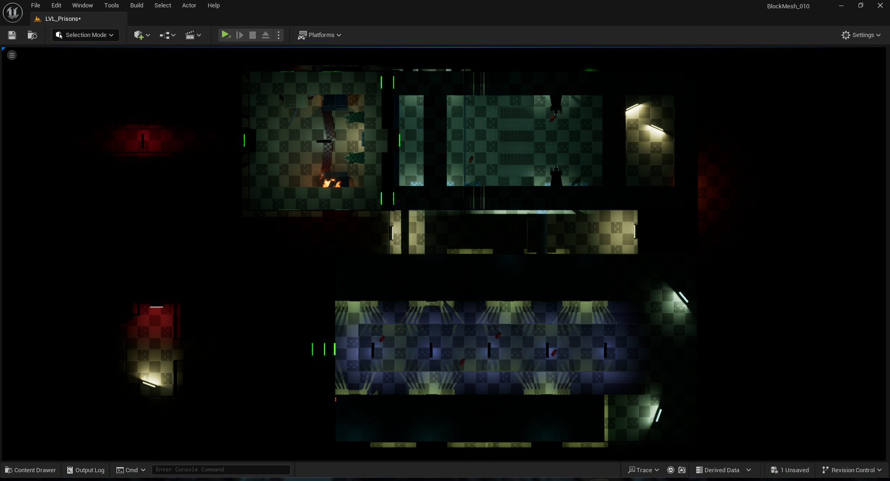

I am a Game Design student at Manchester Metropolitan University.
I have graduated from Salford City College with a Level 3 Extended Diploma in Game Design and Media Production.
I specialise in programming with Unity C# to create player systems, environment obstacles and score systems.
Additionally, I have experience with level design and prototyping with Unreal Engine 5 to build immersive
environments that compliment gameplay systems.
With a focus on creating engaging gameplay experiences and passion for development and programming,
I wish to grow my skill set by learning new software and tools.
Planet-Fisher is a top down exploration and survival shooter that I produced alongside 9 team members.
For this project, I took the role of project manager leading a group of other students which included programmers
and artists. The game was developed in Unity and the sprites, tiles and animation sheets were all made in Aseprite.
During the production of this game, I used Jira for task management. This involved assigning and updating my team's
tasks on a regular basis. For this project we followed an agile scrum framework by setting weekly deadlines to
ensure consistent progress which was reflected by the weekly burndown charts. Sprint prioritisation meetings were
held to plan tasks for the following sprint.
We used GitHub to collaboratively work on the Unity project.



Electrician's Mayhem is a navigation-based puzzle game built around complex level layouts,
diverging pathways and learning through practice. I developed this game in Unity and created the
pixel art for all sprite and animations using Aseprite.
This game spans across four levels with which get progressively larger creating more complex layouts
to remember and more challenging puzzles. A central mechanic with is this game is
staining the environment with electrical fluid as you move which was done using object pooling
to optimise performance.
Another system I developed for this includde character switching between the default player character and a drone player character,
each with unique movement to traverse the level in differnt ways. I also created an elevator system which can
only be accessed by the default player, not the drone. Puzzles were built around these mechanics.




Trax is a precision platformer where the player controls the direction that platforms move.
For this project, I was the lead developer in-charge of producing a prototype using Unity.
I created most systems such as player movement and platforming so that it feels responsive
and smooth. I also developed the platform movement systems creating 3 variations of platforms
to allow for more diverse levels and unique platforming challenges. All art and animations were
created by 2 other team members that I worked alongside to develop this game.
This prototype was made with the intention of providing gameplay for a short teaser trailer.
During the environment and level design module, I created 3 interconnecting levels inspired
by Batman: Arkham Asylum. I also prototyped gameplay mechanics to create
further immersion. This included player and NPC combat, grappling and detective vision which are all
central mechanics to Batman: Arkham Asylum.
I created some of the level assets using Unreal Engine's modelling tools. All other animation and
3D model assets used to produce these levels were sourced from the FAB marketplace. I used the
SuperGrid starter pack to block out levels defining their structure and layout.



All game jam prototypes were made in Unreal Engine 5.
This escape room puzzle requires three separate characters to escape from their own
rooms. The player can switch between these 3 characters each of which has their own
puzzles to solve. However, they also effect the state of other rooms.
The player must switch between these characters so they can help each other escape their
rooms. The game is colour coded to the colours of each of the rooms, so the player knows which
room they are affecting.
In this game, the player uses a tractor beam to push and pull materials in outer space.
If they get 2 materials of the opposite colours to collide, this creates a fuel material
that the player can use to keep the fuel progress from depleting. Additionally, fuel within
the ship results in a new poster to the ship as decoration. Complete fuel depletion
results in a game over.
The cyan coloured materials can be used to power the spaceship keeping the lights on.
When collecting materials, the player can hold left and right click to lightly add force
pushing or pulling the objects gently with their tractor beam. They can also use E and Q to
add a significantly higher force to the materials which pushes or pulls them much further.
This feature can result in the objects flying too far if overused.
This game takes regular golf but adds higher stakes in a much smaller level space.
The player must reach the 3 flag holes within as few strokes as possible while
also avoiding getting hit by lasers.
The level offers alternate routes that connect to other parts of the level while making
it a challenge to reach the flags. To support the player, green cubes allow the player to
teleport to other green cubes offering them alternate paths. This also allows momentum to be carried over
when they reach the next green cube allowing for strategic plays depending on the angle that the
ball hits the teleportation cubes.